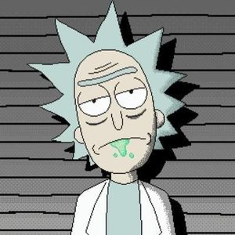

Vasâlicî Moldovanu

Cum î-ni zîși mămica ”Măi Vasâlicî măi, ia mai dă niști mâncari la porșii șeia ș-nu sta atâta la COMPIUTARU șiala”, Dumnezău sî-i dă-i sănătati, cî m-o făcut așă diștept.
Șî amu șini îs EU (asta nu-i acronimu EU, cum zâc burgherii di pisti ocian, da eu ca pronumili șiala personal, ca tu...... nu ca tu, da ca eu, da niș ca Evropa), mai pi scrut eu îs Freelancer, ș-pațan ciotkii cum î-ni spun șei din dvor, ș pațan di treabî cum îni spun șei din beși, la un păhărel di jinișor șî un șașlîciok numa bun di dughit șî di crăpat, bazar ușis.
Educăișon (tipa știu limba americanî)
- Studențăl la Univeristatea di Stat (nu di șăzut ăi!) din Chișâniov.
- Coledju di Informatikî din Kișîniov (cari amu îi Centru di excelențî, auz ăi! Centru di excelențî!)
- Școala Generalî Moldovneaskî (cu mulț copkii ș pidagoji di treabî)
Opât di lucru (cum s-ar zâși ixperiențî)
| Data | Lucru |
|---|---|
| 2017-2018 | Brigadir general la prășât pi dial |
| 2019 | Nu sî știe încî ăi! Mai pi scurt a-s-văd, c-amu ni-i rău! |
Și pot eu (plius-minus mai ghini)
| Rânit la animali | ⭐⭐⭕⭕⭕ |
| Master Sapî | ⭐⭕⭕⭕⭕ |
| Master Șâpu | ⭐⭐⭐⭐⭐➕➕➕ |
| Băiețaș Acătării | ⭐⭐⭐⭐⭕ |
| La Rulit Iapa | ⭐➖⭕⭕⭕ |
| La Italia | ⭐⭐⭐⭕⭕ |
| Kazanova Master | ⭐⭐⭐⭐⭐➕ |